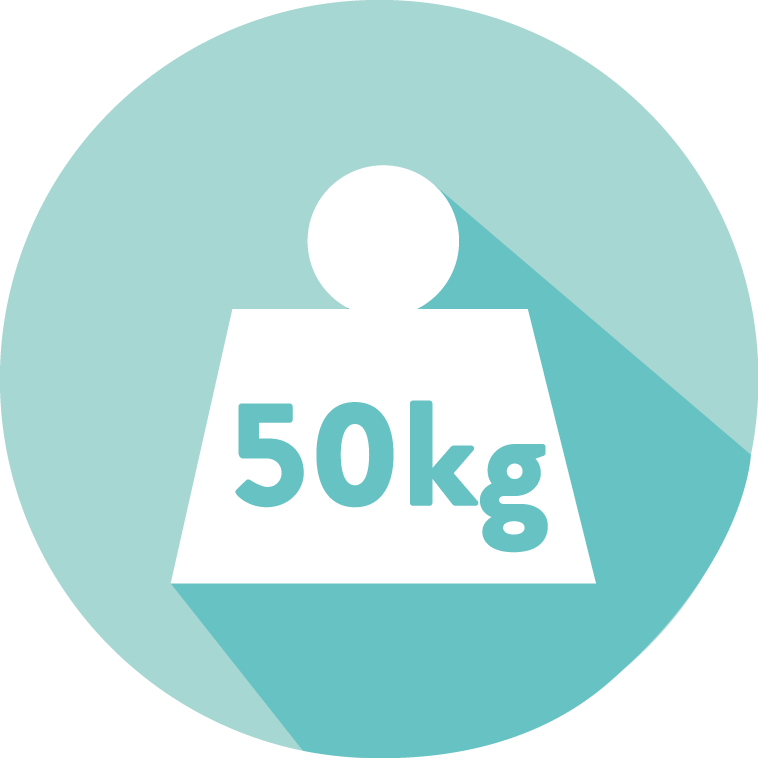
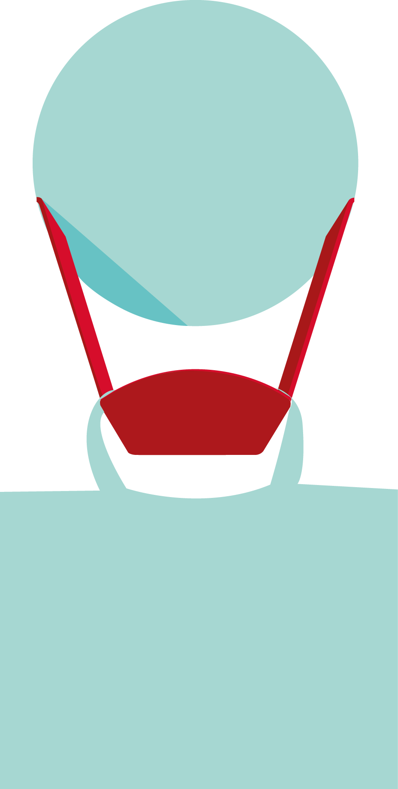
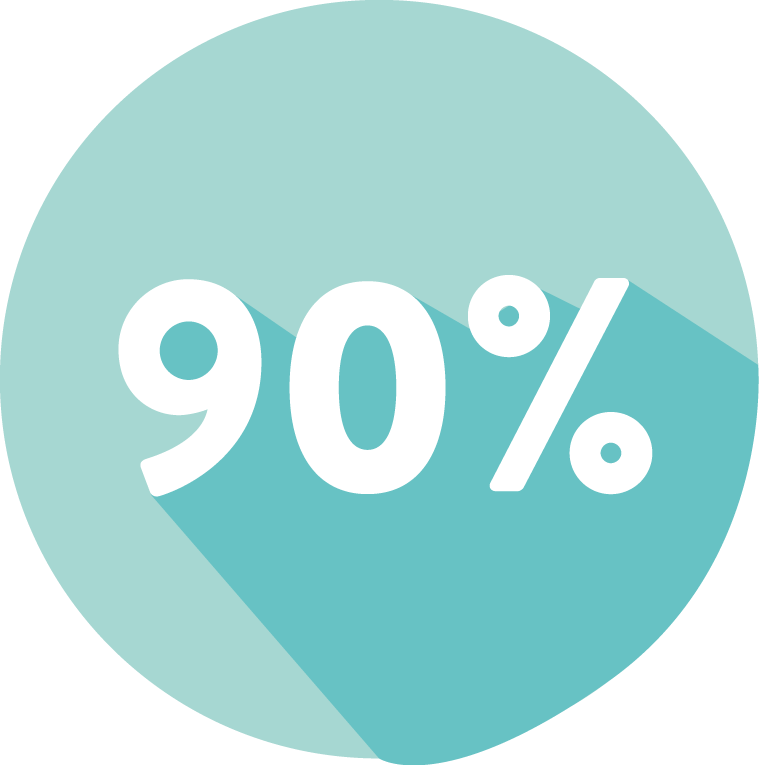

Retrouvez les photos MAIS QU'EST-CE QUE C'EST ? >> ICI <<
PRET A DECOUVRIR NOS PRODUITS ?
Simple, malin, accessible. Le "V" permet d’accrocher son sac (ou autres contenants) en toute sécurité pour facilité la mise au collecteur de verre.
Plus besoin de se baisser, gardez les mains libres et propres !
Produits conçus et manufacturés en France.
Supporte un poids de 50kg. (= 120 bouteilles, vous avez de la marge !)
Accrochez votre sac en toute sécurité, c’est facile et sans risque.
S’adapte à 9O% des collecteurs de verre.
En France, c’est 3,6 millions de tonnes de déchets qui sont générés chaque année pour ce matériau 100% recyclable et reconnu pour être le meilleur emballage du point de vue de l’écologie et de la santé.
« La mise en place des systèmes publics de collecte du verre usager est l’une des plus belles initiatives en matière de respect de l’environnement mises en place par les gouvernements de l’UE au cours des 35 dernières années. Le système repose sur une coopération solide et stable entre les consommateurs, les services publics et l’industrie du verre d’emballage. » Selon Verre Avenir.
Par la réussite de cette collecte, vous posez avec nous les bases d’un projet entrepreneurial qui ne demande qu’à se développer, en gamme de produits comme en nouveaux marchés. Nous avons de la suite dans les idées et pensons à ce jour pour vous des produits plus performants écologiquement mais aussi économiquement. Toujours dans l’intention de simplifier et donc de développer le recyclage.
Parce que gérer ses déchets en verre n’a jamais été pratique, que nous manquons d’outils pertinents, que la flemme s’empare de nous à l’idée de cette corvée, Volvert voit le jour.
Nous vous proposons de recycler plus simplement votre verre.
Grâce aux gammes de produits que nous développons, vous pourrez bientôt aborder avec légèreté le tri du verre, avec efficacité son stockage, avec rapidité et propreté son apport au collecteur.
Par ces gestes nouveaux et simples, vous continuerez alors de valoriser ce matériau recyclable indéfiniment et à 100%.